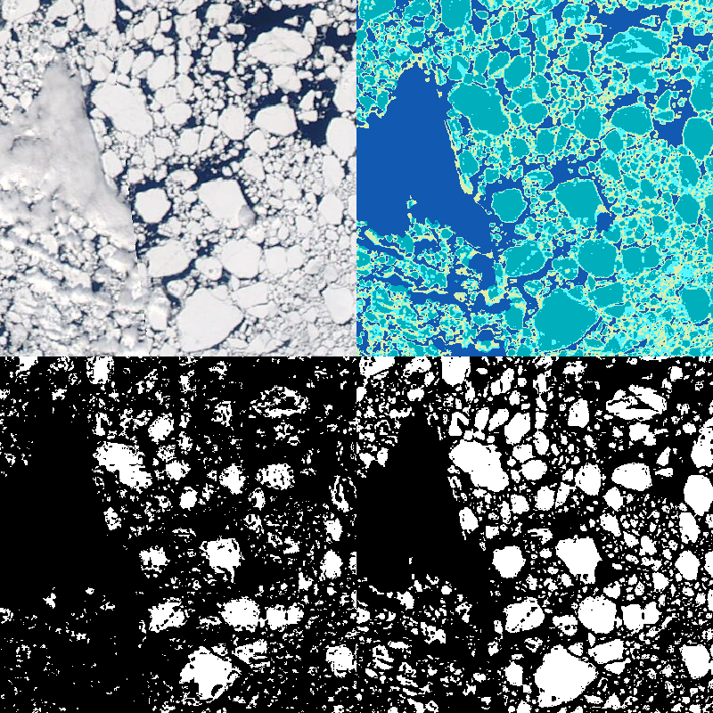

Segmentation
The IFT segmentation functions include functions for semantic segmentation (pixel-by-pixel assignment into predefined categories) and object-based segmentation (groupings of pixels into distinct objects). Most of the segmentation algorithms currently focus on producing a binary mask, dividing objects of interest from the background. The semantic segmentation steps use $k$-means to group pixels into water and ice regions. A combination of watershed functions, morphological operations, and further applications of $k$-means are used for producing an object-based segmentation.
$k$-means Binarization
$k$-means clustering is a common technique where points are grouped into a predetermined number of clusters. The IFT package contains a wrapper for the Clustering.jl $k$-means algorithm enabling its use on grayscale images and arrays. Because sea ice floes tend to contain the brightest pixels in a scene, $k$-means clustering is often effective at grouping ice floes together into a single cluster. If clouds and land have been masked, then the remaining pixels tend to come from only a few surface types – water, new ice, and mixed sub-pixel-resolution ice floes. The $k$-means binarization technique operates as follows:
- Use $k$-means clustering to identify coherent color regions in an image
- Identify pixels with bright ice
- Select the cluster with the largest fraction of bright ice pixels.
The process is illustrated in the image below, as well as in an example notebook in the Github repository.

In the top left, we see the truecolor image for Case 006, from the Aqua satellite. Prior to the $k$-means clustering, we cast the image to grayscale, equalized it, and sharpened it. The top right shows the $k$-means clusters with $k=4$. In the bottom left is the result from the IceDetectionAlgorithm (here, IceDetectionBrightnessPeaksMODIS721). Finally, the $k$-means binarization result is in the bottom right.
Tiled adaptive binarization
Adaptive threshold binarization uses image properties within a moving window to separate light and dark areas in an image. If the window contains both sea ice and water, it is an effective method for producing an initial sea ice segmentation. One side effect however can be that relatively bright regions that are too dark to be ice can appear bright in the binarized image. The tiled_adaptive_binarization function includes a minimum brightness threshold which is applied after the standard AdaptiveThreshold to supress such cases.
Floe splitting
Binarized images of sea ice floes generally need further processing before they can be treated as objects, because sea ice floes are often in contact with one another. The primary methods in IceFloeTracker for floe splitting are morphological operations such as opening (erosion followed by dilation) and hbreak (removing single pixel connections between objects), and watershed transformation.
Pipelines
Sea ice floe segmentation requires a series of image processing steps. The Pipelines module contains workflows which link together the preprocessing, segmentation, and floe splitting routines. Examples of each are provided in the Tutorials section.
Summarizing segmentation results
The regionprops function computes characteristics of each individual objects. The IFT regionprops function is modeled after the Scikit Image regionprops function while internally using the structure of the component_* functions in Julia ImageMorphology. In addition to the component functions from ImageMorphology, we include functions for
- computing the perimeter using the Benkrid-Crooks algorithm
- computing the convex area, either using the convex hull polygon or using a count of pixels falling inside the convex hull
- extracting the cropped object mask and adding it to the data frame
- computing the $\psi$-s curve from the object masks
As with the regionprops function in Scikit Image, a subset of the properties can be called:
region_props_dict = regionprops(segmented_image, properties=[:area, :convex_area, :centroid])and either a Dict (as above) or a DataFrame can be produced:
region_props_df = regionprops_table(segmented_image, properties=[:area, :convex_area, :centroid])